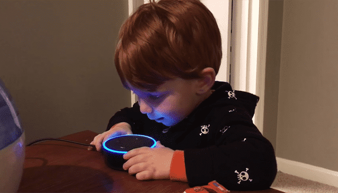

MAY 2019:

Child using Amazon Echo- image received from www.technocracynews.com
Senators Call for FTC to Investigate Amazon Echo for Kids:
- Senators Markey, Blumenthal, Durbin, and Hawley sent a letter to the Federal Trade Commission to launch an investigation into new evidence of Amazon violations of the Children's Online Privacy Protection Act (COPPA) with an Amazon device targeted to children. The Senators wrote: "Children are a uniquely vulnerable population. We urge the Commission to take all necessary steps to ensure their privacy as 'Internet of Things' devices targeting young consumers come to market, including promptly initiating an investigation into the Amazon Echo Dot Kids Edition’s compliance with COPPA.: The letter cites a recent complaint to the FTC by Campaign for a Commercial-Free Childhood and joined by EPIC. EPIC testified before Congress in support of the original children's privacy law and backed the 2013 regulations that updated the law. (May. 9, 2019)
Senators Markey, Hawley Introduce Children's Privacy Legislation: :- Senators Edward Markey (D-Mass.) and Josh Hawley (R-Mo.) have introduced legislation to update the Children's Online Privacy Protection Act (COPPA). The bill bans internet companies from collecting personal or location information from children under 13 without parental consent and from teens ages 13-15 without the user's consent. EPIC testified before Congress in support of the original children's privacy law and backed the 2013 regulations that updated the law. EPIC recently submitted comments in support of the FTC's proposed extension of the information collection requirements for COPPA, but said the law "would be more effective if the FTC established new limits on how firms can collect and use children's data." (Mar. 12, 2019)
FTC Obtains Fines TikTok for Violation of Children's Privacy:
TikTok Logo- received from www.TikTok.com
- TikTok settled with the FTC for $5.7 million over allegations that the Chinese video app company violated the Children's Online Privacy Protection Act. The FTC complaint alleges that TikTok violated COPPA by collecting personal information from kids without parental consent. The $5.7 million fine is the Commission's largest COPPA penalty. The Commission's vote was unanimous. EPIC helped enact the children online privacy law and regularly submits comments to the FTC on children's privacy issues. (Feb. 27, 2019)
EPIC Joins Coalition Calling on FTC to Investigate Facebook for Deception of Children: - A coalition of consumer groups sent a complaint to the FTC, charging that Facebook engaged in unfair and deceptive practices and violated the Children's Online Privacy Protection Act after court documents from a 2012 class action lawsuit revealed that Facebook encouraged children to make credit card purchases on Facebook's platform. Parents and minors repeatedly complained about the credit card charges, but the documents indicate that the company refused to refund charges and set up a complex complaint system to deter refund requests. EPIC helped enact the children online privacy law and regularly submits comments to the FTC on children's privacy issues. (Feb. 21, 2019)
EPIC Supports Extension of Children's Privacy Reporting Requirements:- EPIC submitted comments in support of the FTC's proposed extension of the information collection requirements for the Children's Online Privacy Protection Act. EPIC explained the importance of the law that protects the personal data of children who use Internet services, but added that the law "would be more effective if the FTC established new limits on how firms can collect and use children's data." EPIC testified before Congress in support of the original children's privacy law and backed the 2013 regulations that updated the law. Earlier this year, the FTC unanimously voted to approve EPIC's recommendations to create new safeguards for children's data in the gaming industry. (Dec. 3, 2018)
Following EPIC Comments, FTC Strengthens Safeguards for Kids' Data in Gaming Industry: - The FTC has unanimously voted to approve EPIC’s recommendations to strengthen safeguards for children's data in the gaming industry. In a 5-0 vote, the FTC adopted EPIC's proposals to revise the Entertainment Software Rating Board's industry rules to (1) extend children's privacy protections in COPPA to all users worldwide; and (2) to implement privacy safeguards for the collection of data "rendered anonymous." The FTC wrote, "the Commission agrees with EPIC's comment. As COPPA's protections are not limited only to U.S. residents, the definition of 'child' in the ESRB program has been revised to remove the limitation." The Commission also strengthened protections for de-identified children's data: "companies must provide notice and obtain verifiable parental consent if personal information is collected, even if it is later anonymized." EPIC has testified several times before Congress on protecting children's data and supported the 2013 updates to COPPA.(Aug. 14, 2018)
Congressional Leaders Reintroduce Bipartisan Bill To Protect Children's Online Privacy: - Senator Edward Markey (D-MA) and Congressman Joe Barton (TX-06), along with Senator Richard Blumenthal (D-CT) and Congressman Bobby L. Rush (IL-01), have reintroduced the Do Not Track Kids Act, a bill that would strengthen the Children's Online Privacy Protection Act (COPPA) by extending its protections to children under 15 and creating an "Eraser Button" that would allow parents and children to delete publicly available personal information. The bill would also prohibit targeted advertising to children, mandate data security standards for internet-connected devices sold to children, and establish a "Digital Marketing Bill of Rights for Minors" that would limit the collection of children's personal information, including geolocation information. EPIC recently warned the Federal Trade Commission not to weaken existing rules under COPPA that safeguard children's privacy. EPIC and a coalition of consumer groups have also urged the FTC to stop companies from selling dangerous, internet-connected "toys that spy". (May. 23, 2018)
EPIC Advises FTC on Children's Privacy: - In response to an industry proposal to diminish safeguards for children's privacy, EPIC reminded the FTC that industry guidelines must comply with the Children's Online Privacy Protection Act. EPIC also highlighted recent updates in the COPPA regulations that minimize data collection concerning children. EPIC wrote, "COPPA has evolved to address changes in technology and business practices." EPIC has testified several times before Congress on protecting children's data and supported the 2013 updates to COPPA. (May. 9, 2018)
FTC Finally Takes Action on Connected Toys, Settles With Company That Violated Children's Privacy Law: - The Federal Trade Commission announced a settlement with VTech Electronics over charges that the company collected personal information from children without parental consent and failed to provide data security. In 2015, Senators Edward Markey (D-MA) and Joe Barton (R-TX) inquired about VTech's privacy practices after the toy company was hacked, exposing the personal information of millions of children. EPIC and a coalition of consumer organizations recently renewed their call to the FTC to take action on toys that spy, one year after the groups filed a complaint with the FTC regarding dangerous internet-connected toys. The Children's Online Privacy Act (COPPA) sets forth strict requirements for the collection of information from children. In a recent interview with NBC Nightly News, EPIC's Sam Lester highlighted the dangers these toys pose from hackers. EPIC has supported numerous efforts to oppose toys that spy, including a successful effort in 2017 to recall Mattel's Aristotle. (Jan. 8, 2018)
FTC Updates Guidance on Children's Privacy Law, Includes Connected Toys: - The Federal Trade Commission has updated its guidance for businesses on complying with the Children's Online Privacy Protection Act. The new guidance clarifies that connected toys, Internet of Things devices, and other products intended for children must comply with the Act. "When companies surreptitiously collect and share children's information, the risk of harm is very real," FTC acting Chair Maureen Ohlhausen recently wrote. An EPIC-led coalition filed a complaint with the FTC in 2016 alleging that Intenet-connected dolls violate U.S. privacy law. EPIC's complaint spurred a congressional investigation and toy stores across Europe have removed Cayla from their shelves. The FTC acknowledged EPIC's complaint but has yet to act on it. (Jun. 27, 2017)
Coalition Alleges Children's Privacy Violation: - EPIC and 11 consumer organizations alleged in a complaint to the Federal Trade Commission (FTC) today that Amazon.com has illegally collected and disclosed children's personal information in violation of the Children's Online Privacy Protection Act (COPPA). The FTC has taken action in previous cases where companies direct web sites towards children and collect the personal information of children. (Apr. 22, 2003)